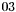
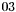

Turbo equalizer
The coded transmission is realized using a Non-recursive and non-Systematic Convolutional (NSC) code whose bits, after interleaving (of length ), are BPSK modulated and send into a multipath channel. The multipath channel has real coefficients and must have at least
), are BPSK modulated and send into a multipath channel. The multipath channel has real coefficients and must have at least  multipaths in order to use an iterative algorithm at the receiver side. The multipath channel can be seen as a coder of coding rate
multipaths in order to use an iterative algorithm at the receiver side. The multipath channel can be seen as a coder of coding rate  , thus the coded transmission being a type of Serial Concatenated Code (SCC). In our case, the multipath channel has Rayleigh distributed coefficients and has
, thus the coded transmission being a type of Serial Concatenated Code (SCC). In our case, the multipath channel has Rayleigh distributed coefficients and has  multipaths. Optionally a precoder can be used at channel input in order to obtain an equivalent recursive channel. The precoder polynomial is . At the channel output, the received signal is affected by an Additive White Gaussian Noise (AWGN).
multipaths. Optionally a precoder can be used at channel input in order to obtain an equivalent recursive channel. The precoder polynomial is . At the channel output, the received signal is affected by an Additive White Gaussian Noise (AWGN).

Coded transmission

Turbo equalizer

Performances of the turbo equalizer without precoder using max log MAP algorithm

Performances of the turbo equalizer without precoder using log MAP algorithm

Performance of the turbo equalizer with precoder using max log MAP algorithm

Performance of the turbo equalizer with precoder using log MAP algorithm
Reference: R. Koetter, A. C. Singer, and M. Tuchler, ''Turbo equalization: an iterative equalization and decoding technique for coded data transmision,`` IEEE Signal Processing Magazine, pp. 67-80, Jan. 2004